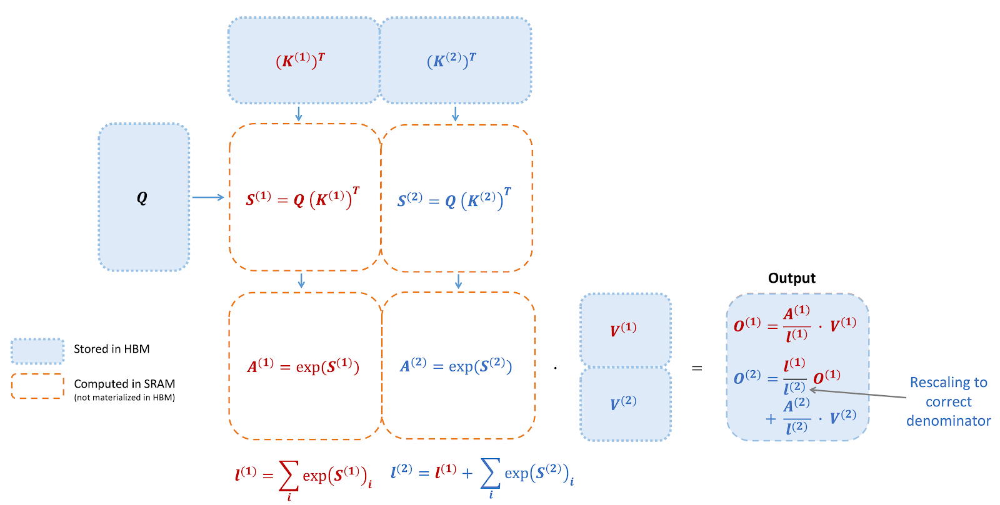
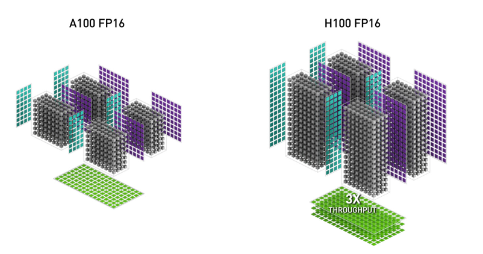
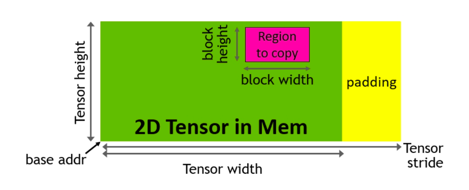
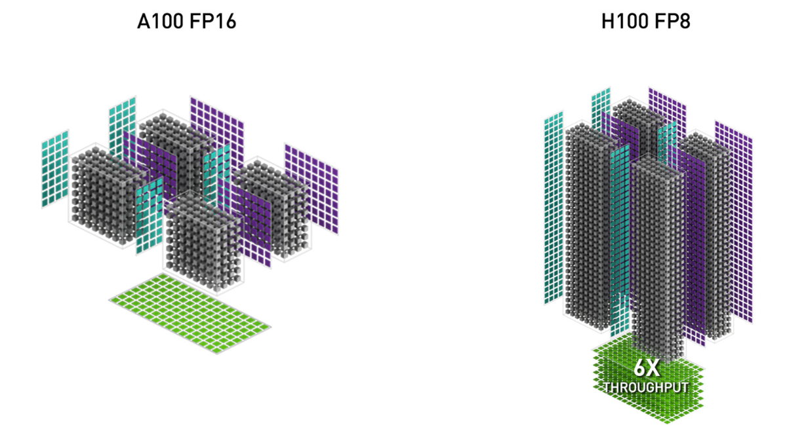
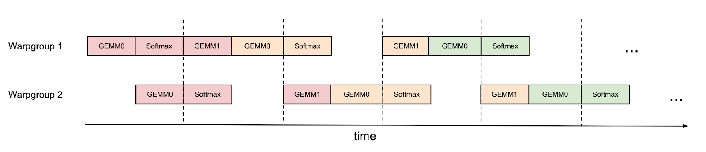
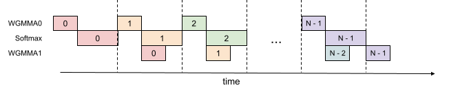
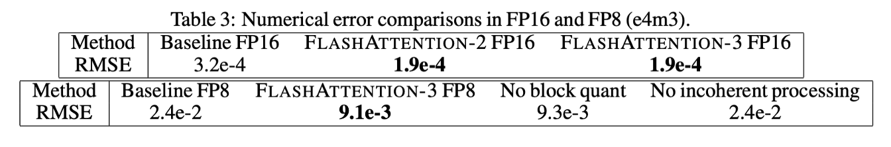
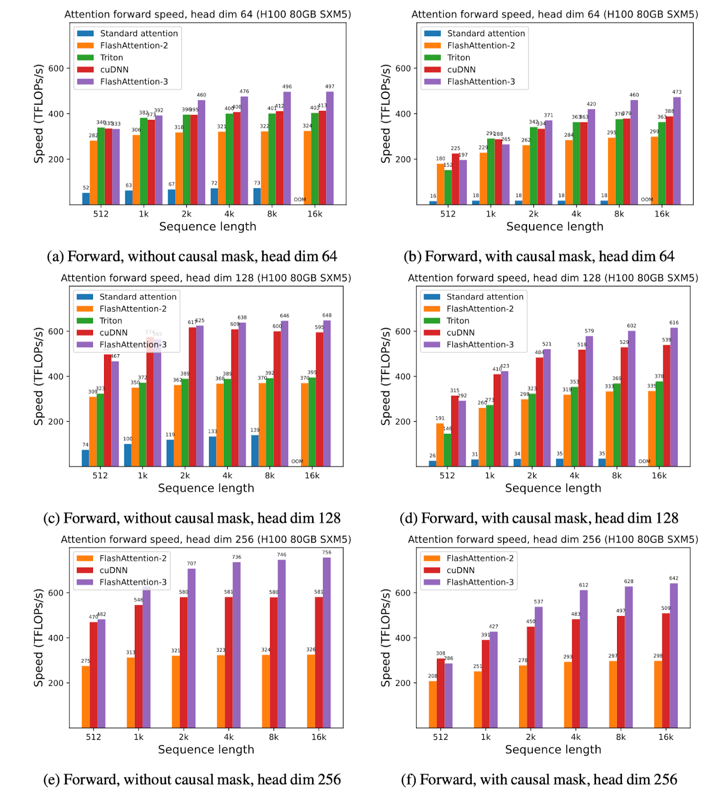
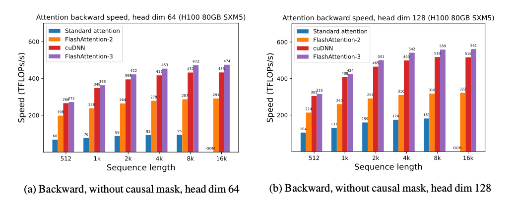
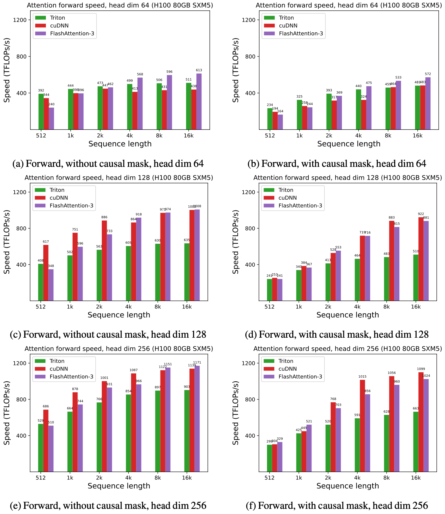

Attention, as a core layer of the ubiquitous Transformer architecture, is a bottleneck for large language models and long-context applications. FlashAttention (and FlashAttention-2) pioneered an approach to speed up attention on GPUs by minimizing memory reads/writes, and is now used by most libraries to accelerate Transformer training and inference. This has contributed to a massive increase in LLM context length in the last two years, from 2-4K (GPT-3, OPT) to 128K (GPT-4), or even 1M (Llama 3). However, despite its success, FlashAttention has yet to take advantage of new capabilities in modern hardware, with FlashAttention-2 achieving only 35% utilization of theoretical max FLOPs on the H100 GPU. In this blogpost, we describe three main techniques to speed up attention on Hopper GPUs: exploiting asynchrony of the Tensor Cores and TMA to (1) overlap overall computation and data movement via warp-specialization and (2) interleave block-wise matmul and softmax operations, and (3) incoherent processing that leverages hardware support for FP8 low-precision.
We’re excited to release FlashAttention-3 that incorporates these techniques. It’s 1.5-2.0x faster than FlashAttention-2 with FP16, up to 740 TFLOPS, i.e., 75% utilization of H100 theoretical max FLOPS. With FP8, FlashAttention-3 reaches close to 1.2 PFLOPS, with 2.6x smaller error than baseline FP8 attention.
FlashAttention-3 is available at: https://github.com/Dao-AILab/flash-attention
Paper
FlashAttention Recap
FlashAttention is an algorithm that reorders the attention computation and leverages tiling and recomputation to significantly speed it up and reduce memory usage from quadratic to linear in sequence length. We use tiling to load blocks of inputs from HBM (GPU memory) to SRAM (fast cache), perform attention with respect to that block, and update the output in HBM. By not writing the large intermediate attention matrices to HBM, we reduce the amount of memory reads/writes, which brings 2-4x wallclock time speedup.
Here we show a diagram of FlashAttention forward pass: with tiling and softmax rescaling, we operate by blocks and avoid having to read/write from HBM, while obtaining the correct output with no approximation.

New hardware features on Hopper GPUs – WGMMA, TMA, FP8
While FlashAttention-2 can achieve up to 70% theoretical max FLOPS on Ampere (A100) GPUs, it does not yet take advantage of new features on Hopper GPUs to maximize performance. We describe some of the new Hopper-specific features here, and why they are important.
1. WGMMA (Warpgroup Matrix Multiply-Accumulate). This new feature makes use of the new Tensor Cores on Hopper, with much higher throughput1 than the older mma.sync instruction in Ampere (image from the H100 white paper).

2. TMA (Tensor Memory Accelerator). This is a special hardware unit that accelerates the transfer of data between global memory and shared memory, taking care of all index calculation and out-of-bound predication. This frees up registers, which is a valuable resource to increase tile size and efficiency.

3. Low-precision with FP8. This doubles the Tensor Core throughput (e.g. 989 TFLOPS with FP16 and 1978 TFLOPS with FP8), but trades off accuracy by using fewer bits to represent floating point numbers.

FlashAttention-3 makes use of all of these new features of Hopper,
using powerful abstractions from NVIDIA’s CUTLASS library.
By rewriting FlashAttention to use these new features, we can already
significantly speed it up (e.g., from 350 TFLOPS in FlashAttention-2
FP16 forward pass to around 540-570 TFLOPS). However, the asynchronous
nature of the new instructions on Hopper (WGMMA and TMA) opens up
additional algorithmic opportunities to overlap operations and thereby
extract even greater performance. For this blogpost, we’ll explain two
such techniques specific to attention. The generic technique of warp
specialization, with separate producer and consumer warps doing TMA and
WGMMA, is well-covered elsewhere in
the context of GEMM and works the same here.
Asynchrony: Overlapping GEMM and Softmax
Why overlap?
Attention has GEMMs (those matmuls between Q and K and between attention probability P and V) and softmax as its two main operations. Why do we need to overlap them? Isn’t most of the FLOPS in the GEMMs anyway? As long as the GEMMs are fast (e.g., computed using WGMMA instructions), shouldn’t the GPU be going brrrr?
The problem is that non-matmul operations are much slower than matmul operations on modern accelerators. Special functions such as exponential (for the softmax) have even lower throughput than floating point multiply-add; they are evaluated by the multi-function unit, a unit separate from floating point multiply-add or matrix multiply-add. As an example, the H100 GPU SXM5 has 989 TFLOPS of FP16 matrix multiply, but only 3.9 TFLOPS (256x less throughput) for special functions2! For head dimension 128, there are 512x more matmul FLOPS than exponential, which means that exponential can take 50% of the time compared to matmul. The situation is even worse for FP8, where the matmul FLOPS are twice as fast yet exponential FLOPS stay the same speed. Ideally we want matmul and softmax to operate in parallel. While the Tensor Cores are busy with matmul, the multi-function units should be calculating exponential!
Inter-warpgroup overlapping with pingpong scheduling
The first and easiest way to overlap GEMM and softmax is to do nothing at all! The warp schedulers already try to schedule warps so that if some warps are blocked (e.g., waiting for GEMM results), other warps can run. That is, the warp schedulers do some of this overlapping for us, for free.
However, we can improve on this by doing some of the scheduling manually. As an example, if we have 2 warpgroups (labeled 1 and 2 – each warpgroup is a group of 4 warps), we can use synchronization barriers (bar.sync) so that warpgroup 1 first does its GEMMs (e.g., GEMM1 of one iteration and GEMM0 of the next iteration), and then warpgroup 2 does its GEMMs while warpgroup 1 does its softmax, and so on. This “pingpong” schedule is illustrated in the figure below, where the same color denotes the same iteration.

This would allow us to perform the softmax in the shadow of the GEMMs of the other warpgroup. Of course, this figure is just a caricature; in practice the scheduling is not really this clean. Nevertheless, pingpong scheduling can improve FP16 attention forward pass from around 570 TFLOPS to 620 TFLOPS (head dim 128, seqlen 8K).
Intra-warpgroup overlapping of GEMM and Softmax
Even within one warpgroup, we can have some part of softmax running while the GEMMs of that warpgroup is running. This is illustrated in this figure, where the same color denotes the same iteration.

This pipelining increases throughput from around 620 TFLOPS to around 640-660 TFLOPS for FP16 attention forward, at the cost of higher register pressure. We need more registers to hold both accumulators of the GEMMs, and the input/output of softmax. Overall, we find this technique to offer a favorable tradeoff.
Low-precision: reduce quantization error with incoherent processing
LLM activation can have outliers with much larger magnitude than the rest of the features. These outliers make it difficult to quantize, producing much larger quantization errors. We leverage incoherent processing, a technique used in the quantization literature (e.g. from QuIP) that multiplies the query and key with a random orthogonal matrix to “spread out” the outliers and reduce quantization error. In particular, we use the Hadamard transform (with random signs), which can be done per attention head in O(d log d) instead of O(d^2) time, where d is the head dimension. Since the Hadamard transform is memory-bandwidth bound, it can be fused with previous operations such as rotary embedding (also memory-bandwidth bound) “for free”.
In our experiment where Q, K, V are generated from a standard normal distribution but 0.1% of the entries have large magnitudes (to simulate outliers), we found that incoherent processing can reduce the quantization error by 2.6x. We show numerical error comparison in the table below. Please see the paper for details.

Attention benchmark
We show some results with FlashAttention-3, and compare it to FlashAttention-2, as well as the implementation in Triton and cuDNN (both of which already use new hardware features of Hopper GPUs).
For FP16, we see about 1.6x-1.8x speedup over FlashAttention-2


For FP8, we can reach close to 1.2 PFLOPS!

Discussion
This blogpost highlights some of the optimizations for FlashAttention available on Hopper GPUs. Other optimizations (e.g., variable length sequences, persistent kernel, and in-kernel transpose for FP8) are covered in the paper.
We have seen that designing algorithms that take advantage of the hardware they run on can bring significant efficiency gains and unlock new model capabilities such as long context. We look forward to future work on optimization for LLM inference, as well as generalizing our techniques to other hardware architectures.
We also look forward to FlashAttention-3 being integrated in a future release of PyTorch.
Notes
- Without the wgmma instruction, the older mma.sync instruction can only reach about ⅔ the peak throughput of Hopper Tensor Cores: https://arxiv.org/abs/2402.13499v1 ↩︎
- The CUDA programming guide specifies that the throughput for special functions is 16 operations per streaming multiprocessor (SM) per clock cycle. We multiply 16 by 132 SMs and 1830 Mhz (clock speed used to calculate 989 TFLOPS of FP16 matmul) to get 3.9 TFLOPS ↩︎